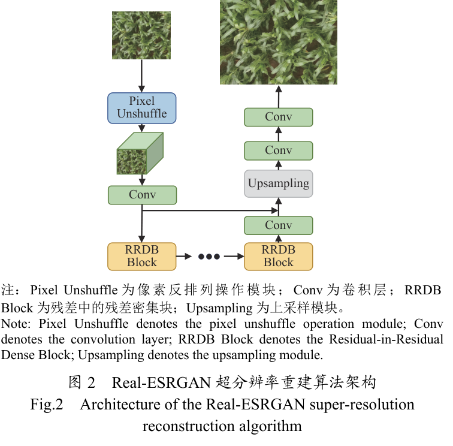
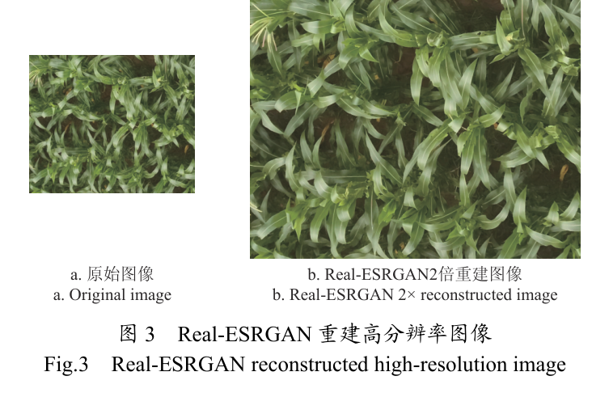
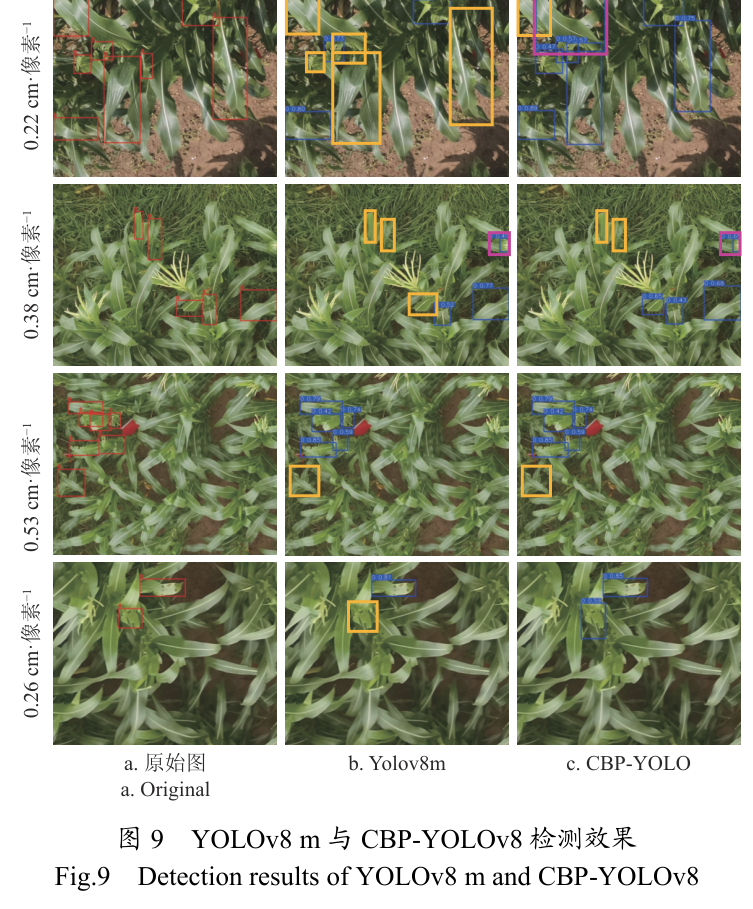

PAPER READING
农业工程学报 · 2026 · 42(10)
CBP-YOLO
基于 CBP-YOLO 的玉米田间草地贪夜蛾侵染痕迹检测与试验
以 YOLOv8m 为基线，把 Real-ESRGAN 超分辨率重建、C2f-CA 坐标注意力、BiFPN 双向特征融合与 P2 小目标检测头串成「重建—提取—融合—检测」流水线，在自建无人机多尺度数据集上 AP@0.5 达到 76.5%。
齐江涛 · 王硕 · 熊悦凇 · 高芳芳 · 王发赢 · 邹宗峰 · 刘英智 · 刘慧力
吉林大学工程仿生教育部重点实验室 / 生物与农业工程学院 / 吉林省智慧农业装备与技术重点实验室 · 烟台市农业技术推广中心
无人机航拍
草地贪夜蛾
多尺度 GSD
小目标检测
智慧农业
Motivation
研究动机：小目标、跨尺度与复杂背景的三重夹击
幼虫啃食后叶片形成不规则孔洞、锯齿状缺刻和大面积啃食区域，痕迹尺寸小、特征表征不明显；人工田间观察效率低、主观性强，基于图像的自动监测又面临识别精度低、漏检率高的问题。
A
小目标像素少
侵染斑块在图像中占比小、特征对比度低，经主干多次下采样后细节容易被忽略，漏检风险高。
B
尺度变化大
无人机在 3、5、7 m 不同高度采集，斑块像素尺寸差异显著，单一特征层级难以兼顾跨尺度目标。
C
背景干扰强
土壤裸露区、杂草、田间阴影叠加低分辨率纹理缺失，损伤区域的特征表达进一步被削弱。
已有研究多从超分辨率、注意力或小目标检测层单点改进；小目标检测、多尺度特征融合与特征表征三方面的协同仍显不足，这正是 CBP-YOLO 的切入点。
Contributions
核心贡献：一条四段式协同改进链
01
超分预处理
Real-ESRGAN 恢复低分辨率图像中叶片啃食区域的纹理；0.53→0.26 cm/像素后 AP@0.5 与 F1 分别提升 7.3、8.6 个百分点。
02
坐标注意力
在主干 C2f 中嵌入 CA，沿高度与宽度两个方向做一维编码，兼顾长程依赖与精确位置信息。
03
双向融合
用 BiFPN 替代 PANet，以非负可学习权重动态调节不同尺度的特征贡献，减少跨层信息损耗。
04
小目标检测头
新增 160×160×64 的 P2 浅层检测头，把高分辨率浅层特征接入检测，扩展小尺度目标感知。
自建无人机多尺度叶片数据集上 AP@0.5 达 76.5%，较 YOLOv8m 提升 3.4 个百分点；较 YOLOv9m、YOLOv10m、YOLOv11m、Faster R-CNN、RetinaNet 分别提升 10.1、7.2、5.1、9.3、17.9 个百分点。
Method 01
多尺度采集：用 GSD 统一分辨率口径
DJI P4 多光谱无人机采集可见光图像（1600×1300 像素，水平视场角 62.7°，焦距 5.74 mm），飞行高度设为 3、5、7 m，对应 GSD 分别为 0.22、0.38、0.53 cm/像素。
GSD = 2H · tan(θ / 2) / N
H 为飞行高度，θ 为水平视场角，N 为图像水平像素数；成像几何不变时，N 越大，单像素对应的地面距离越小。
图中依次为 0.22、0.38、0.53 cm/像素 的田间样本：GSD 越大，叶片啃食痕迹的像素占比越小，土壤裸露区等背景干扰相对增多。该口径既是数据分组的依据，也是超分辨率重建效果的度量尺度。
Method 02
Real-ESRGAN：先学真实退化，再重建纹理
- 早期插值与浅层 SR 结果过于平滑；ESRGAN 引入 GAN，但仍基于简单退化模型，面对模糊、噪声与压缩伪影共存的真实场景表现受限。
- Real-ESRGAN 以 RRDB 生成器 + U-Net 判别器 重建高频细节，并用多次模糊、下采样、噪声与 JPEG 压缩合成高阶退化数据。
- 支持 ×2 放大；Pixel Unshuffle 把空间分辨率降为 1/2、通道扩为 4 倍；判别器引入谱归一化，抑制过度锐化与振铃伪影。
Ib = Blur(I; k, σ) → In = Noise(Ib)
→ Is = Down(In; rk) → ILR = JPEG(Is; Q)
让生成器学习真实退化的逆过程，而不是只对理想下采样做超分。

图 2 · Real-ESRGAN 超分辨率重建算法架构：生成器由 Pixel Unshuffle 预处理、卷积层与多个 RRDB Block 串联后上采样重建。
Method 03
重建之后：0.53 → 0.26 cm/像素的新子集
- 对 GSD=0.53 图像做 ×2 重建，尺寸由 800×650 提升至 1600×1300；成像几何不变、水平像素数翻倍，GSD 减半为 0.26 cm/像素。
- 重建图再切分为 800×650 子图；跨切割线的标注框重新生成，经人工核查剔除不合理标注与无标注图像。
- 新子集单独划分：训练 / 验证 / 测试为 363 / 39 / 41 张图像，对应 682 / 64 / 87 处标注，与原始三档 GSD 一同进入训练流程。
重建不是单纯的图像放大，而是为低分辨率航拍图像补回可被检测器利用的高频纹理。

图 3 · Real-ESRGAN 重建高分辨率图像：左为原始图像，右为 2 倍重建图像，重建后叶片边缘与啃食痕迹的纹理更加清晰。
Method 04
CBP-YOLO 整体结构：重建—提取—融合—检测
图 4 · CBP-YOLO 模型结构：Backbone 的 C2f 均重构为带坐标注意力的 C2f-CA；Neck 以 BiFPNConcat2/3 双向融合 P2–P5 四层特征；Head 新增 P2 小目标检测层，四个 Detect 并行输出，接 Bbox Loss 与 CLS Loss。
以 YOLOv8m 为基础模型，保持单阶段推理路径，仅在 Backbone、Neck、Head 三处做结构替换与扩展。
Method 05
C2f-CA：把通道注意力拆成两个方向的一维编码
- SE 经全局平均池化把空间维度压成标量，细粒度位置信息随之丢失；CBAM 关注局部关联且依赖全连接层，计算开销明显增加。
- CA 沿高度与宽度分别聚合，生成两个方向感知的上下文描述子，在保留精确定位的同时捕捉长程依赖。
zch = (1/W) Σi=0W−1 Xc(h, i)
zcw = (1/H) Σj=0H−1 Xc(j, w)
W、H 为特征图宽度与高度；两个描述子分别保留水平与垂直方向的位置信息。
图 5 · CA 注意力机制模块结构：输入经残差连接后分两路做 X、Y 方向全局平均池化，拼接后由共享卷积与批归一化变换，再经两个分支生成方向注意力并完成通道重标定。嵌入 C2f 后，输出特征继续经主干层传至 Neck 的 BiFPN。
Method 06
坐标注意力生成与特征重标定
两个方向的描述子拼接后，先经共享的 1×1 卷积 F1 与 ReLU 激活，得到压缩比为 r 的中间特征 f；再沿空间维度拆成 fh、fw，分别经 Fh、Fw 与 Sigmoid 生成方向注意力。
Coordinate Attention · Generation & Re-weighting
f = δ(F1([zh, zw]))
gh = σ(Fh(fh)) gw = σ(Fw(fw))
yc(i, j) = xc(i, j) × gch(i) × gcw(j)
δ 为 ReLU，σ 为 Sigmoid；F1、Fh、Fw 为 1×1 卷积，r 为压缩比例系数。
共享变换
两个方向的描述子进入同一中间表示，参数量与计算量保持在轻量级。
方向解耦
拆回高度、宽度两支后分别卷积，得到互不干扰的方向注意力。
逐位置重标定
任一位置的响应同时受水平与垂直权重调制，突出损伤痕迹并削弱背景噪声。
Method 07
BiFPN：用可学习权重做双向跨尺度融合
- PANet 虽实现跨尺度连接，但主要依赖低层细节与高层语义的简单拼接，融合效果有限。
- BiFPN 增加跨层捷径连接，融合节点可同时接收相邻两个层级的输入；非负可学习权重经归一化后动态调节各尺度贡献。
- 本文据此构建 4 层金字塔：P2 160×160×64、P3 80×80×128、P4 40×40×256、P5 20×20×512。
P̂i = Σj wj · Pj / (Σj wj + ε)
P̂i 为第 i 层融合特征，Pj 为第 j 层输入，wj 为非负可学习权重，ε 为防止除零的常数。
图 6 · PANet 和 BiFPN 的特征网络结构：左侧 PANet 自下而上再自上而下逐级传递，右侧 BiFPN 增加跨层捷径连接，融合节点可同时接收相邻两个层级的输入，高层语义与低层细节借此高效互补。（图 6 原注中 P2 的 160×160×16 为排版笔误，正文与本文设置均为 160×160×64。）
Method 08
P2 检测头：把浅层高分辨率特征接进检测
- 原始 YOLOv8 采用 P3、P4、P5 三个检测头；小目标经主干多次下采样后，纹理与边界细节逐渐丢失。
- 浅层特征图分辨率更高、感受野更小，更适合小目标；新增 160×160×64 的 P2 检测头，可覆盖 640×640 输入中 4×4 像素感受野的目标。
- 四个尺度并行输出检测结果，减少小目标细节丢失，输出对接边界框回归与分类两支损失。
P2 把检测粒度从 P3 的 80×80 推进到 160×160，是对小尺度侵染痕迹最直接的结构补偿。
图 7 · 增加小目标检测头示意图：四个特征层自深向浅依次为 20×20×512、40×40×256、80×80×128、160×160×64，各接一个 Detect 检测头并行输出。
Experiments 01
数据集：879 张有效标注图像，按 8:1:1 划分
2024 年 7 月在山东省烟台市烟台农业科学院采集；每幅图像均匀切为 4 张不重叠的 800×650 子图，用 LabelImg 人工框选侵染区域，剔除无标注图像后保留 879 张有效标注图像。
表 1 · 无人机航拍图像数据集：训练 / 验证 / 测试集分别含 703 / 88 / 88 张图像，对应 2749 / 305 / 336 处标注；三个子集均覆盖 0.22、0.38、0.53 三档 GSD，且以 0.22 cm/像素样本为主。
训练集内部分布为 0.22 / 0.38 / 0.53 各 393 / 213 / 97 张，验证集 46 / 31 / 11 张，测试集 51 / 25 / 12 张。
Experiments 02
重建子集与训练配置
表 2 · 超分辨率重建数据集统计：GSD=0.26 的重建子集按 8:1:1 划分为 363 / 39 / 41 张图像，对应 682 / 64 / 87 处标注。
数据增强
对 1066 张训练图像（703 原始 + 363 重建）做旋转、翻转、亮度与对比度调整、模糊及锐化，扩展至 12792 张。
实验平台
Intel Core i9-13900K、128 GB 内存、NVIDIA GeForce RTX 4090；PyTorch 2.2.1 + cuDNN 12.1 加速。
训练与指标
输入 640×640，训练 100 轮，batch size 8，AdamW，初始学习率 0.01，动量 0.937，权重衰减 0.0005；评价 P、R、AP@0.5、AP@0.5:0.95 与 F1。
Experiments 03
GSD 对比：0.53 档漏检明显，重建后改善
图 8 · 不同 GSD 检测结果可视化对比：上行为真实标注、下行为检测结果；红框为真实标注框，蓝框为模型检测框，黄框标出漏检，粉框标出误检。GSD=0.53 一档漏检明显增多，重建后的 0.26 cm/像素图像上检测框与标注框的重合程度明显改善。
0.38 cm/像素在空间覆盖与局部细节之间取得平衡，四档中 AP@0.5 最高；0.53 细节丢失严重，重建后的 0.26 明显回升。
Experiments 04
四档 GSD 的定量结果：0.38 最佳
表 3 · CBP-YOLO 模型在不同 GSD 图像上的检测结果：0.38 cm/像素的 AP@0.5 与 F1 分别达 79.8% / 74.3%，为四档最高；0.22 的 AP@0.5 降至 74.5%，0.53 仅 56.8% / 55.9%；重建后的 0.26 回升至 64.1% / 64.5%，AP@0.5 与 F1 分别提高 7.3 和 8.6 个百分点。
- 0.22 cm/像素的召回率 72.8% 高于 0.38 档的 70.5%，但精确率仅 69.2%；更高分辨率引入更多噪声与无关信息，整体 AP@0.5 与 F1 反而低于 0.38 档。
- 0.53 cm/像素采集效率高，却因细节丢失叠加背景噪声，AP@0.5:0.95 仅 31.5%，为四档最低；Real-ESRGAN 对纹理与边缘的增强有效提升了啃咬痕迹检测能力。
Experiments 05
消融：P2 单点收益最大，三模块协同最佳
表 4 · 不同模块的消融实验：单独引入 P2 把 AP@0.5 由基线 73.1% 提高到 75.4%，CA、BiFPN 单独为 74.1%、73.8%；CA+P2、P2+BiFPN 分别到 75.7%、75.5%；三模块同开取得 76.5% / 43.2% / 73.5%，较基线分别提升 3.4、1.7、3.6 个百分点。
- 更高分辨率的 P2 特征图直接增强对小尺度损伤区域的感知，是单模块中收益最大的改进。
- CA 引导模型关注虫害相关通道、抑制冗余特征；BiFPN 兼顾细节与高层语义。三者协同在提升特征表达的同时平衡了精确率与召回率。
Experiments 06
与主流检测器对比：AP@0.5 全面领先
表 5 · 不同 YOLO 模型检测结果的比较：CBP-YOLO 精确率 74.7%、召回率 72.4%、AP@0.5 76.5%、AP@0.5:0.95 43.2%、F1 73.5%；AP@0.5 较 YOLOv9m、YOLOv10m、YOLOv11m、Faster R-CNN、RetinaNet 分别高 10.1、7.2、5.1、9.3、17.9 个百分点。
YOLOv11m 的精确率 73.1% 与 YOLOv8m 接近，但召回率仅 60.4%，精确性与召回率之间尚未实现良好平衡。
Visualization
定性对比：CBP-YOLO 的框更完整、误漏检更少
- 各行依次为 GSD 等于 0.22、0.38、0.53、0.26 cm/像素的样本；各列依次为原始图、YOLOv8m 与 CBP-YOLO 的检测结果。
- CBP-YOLO 在各尺度下的检测框更完整地覆盖侵染痕迹，误检与漏检数量明显少于基线模型。
- 尤其在 0.53 的低分辨率条件下仍能保持较稳定的定位效果，与消融、对比实验的定量结论一致。

图 9 · YOLOv8 m 与 CBP-YOLOv8 检测效果
在 0.53 cm/像素的低分辨率条件下仍能保持较稳定的定位效果，说明超分、注意力与多尺度融合的收益在定性结果上同样成立。
Summary
优点和创新点
1
超分前置，收益可量化
把 Real-ESRGAN 纳入检测预处理，恢复低分辨率图像中啃食区域的纹理细节，使 GSD=0.53 cm/像素图像的 AP@0.5 提升 7.3 个百分点，为航拍图像增强提供了实用方案。
2
坐标注意力兼顾位置与开销
在 C2f 模块中嵌入协调注意力，通过沿高度与宽度的两个一维特征编码同时捕捉长程依赖与精确位置信息，兼顾计算开销与细节表达，在复杂农田背景下有效突出侵染痕迹特征。
3
融合与检测头协同
用 BiFPN 的加权双向融合替代 PANet 的简单拼接，配合新增的 P2 浅层检测头实现跨尺度特征互补与小目标感知扩展；GSD 对比、消融、多模型对比与可视化构成完整证据链。
农业工程学报 2026 · 42(10)
AP@0.5 76.5%
较 YOLOv8m +3.4
感谢观看